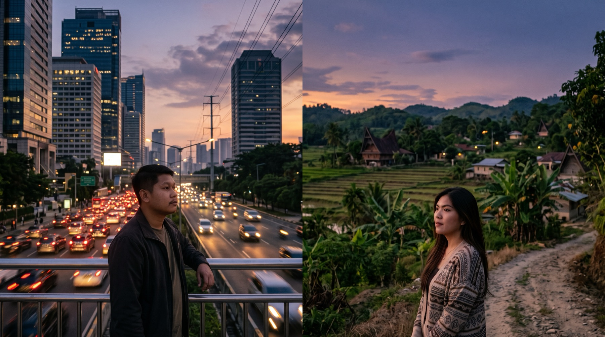
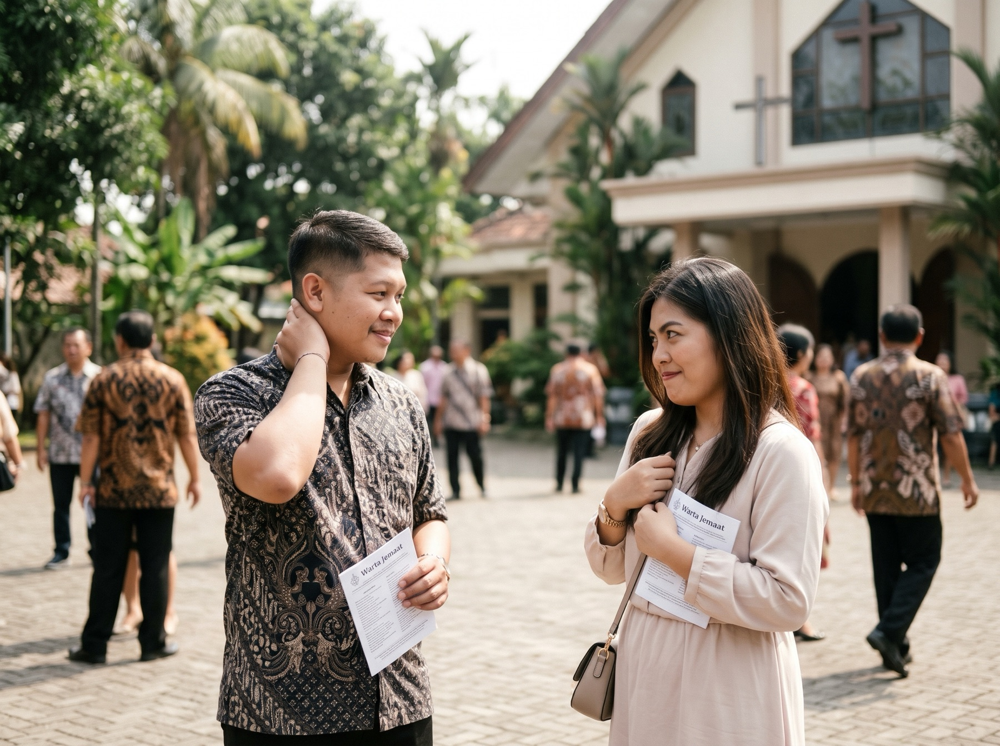
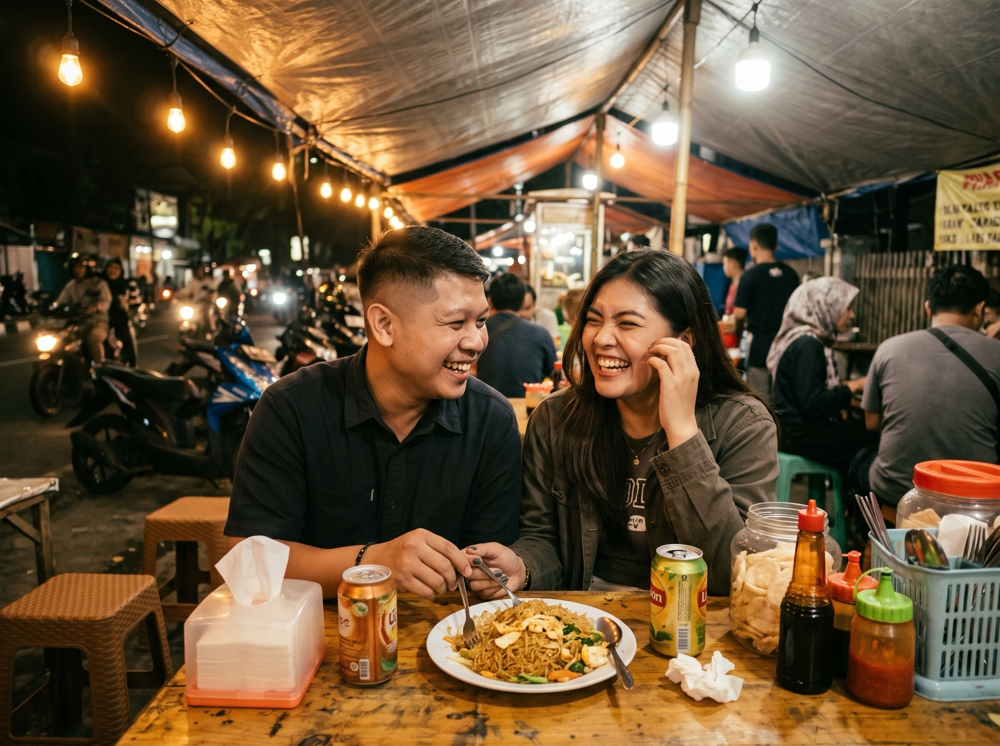
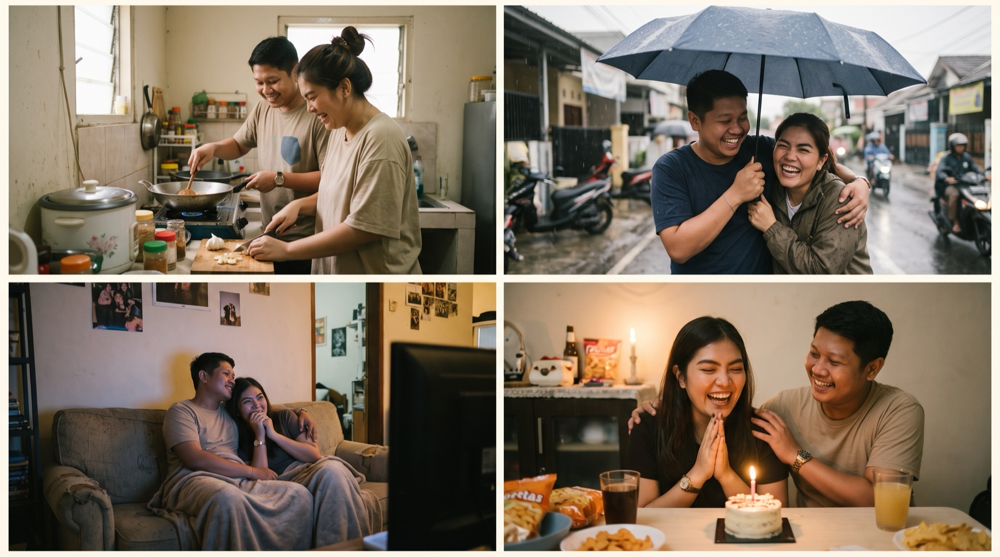
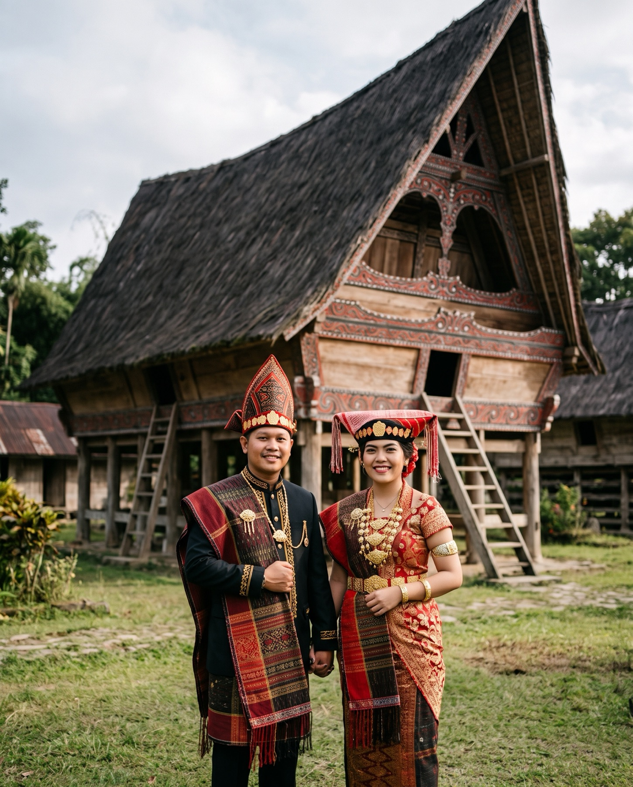

Kisah Kami
Tujuh bab menuju Rumah Bolon

01
Sebelum kita
Dua Kota
Kami tumbuh berjauhan tanpa saling tahu. Tapi langit senja yang kami pandang ternyata sama.
“Untuk segala sesuatu ada masanya.” Pengkhotbah 3:1

02
Bertemu
Di halaman gereja, dengan Warta Jemaat masih di tangan, kami bertukar senyum canggung yang pertama. Hari itu, Tuhan mulai menulis cerita kami.
“Kita mengasihi, karena Allah lebih dahulu mengasihi kita.” 1 Yohanes 4:19

03
Warung tenda
Dekat
Obrolan singkat jadi makan malam di warung tenda, dengan sepiring bihun goreng dan tawa yang tak habis-habis.
“Hati yang gembira adalah obat yang manjur.” Amsal 17:22

04
2020 — sekarang
Bersama
Sejak hari itu, setiap musim kami lewati berdua: masak di dapur kecil, berbagi satu payung saat hujan, dan merayakan hal-hal sederhana.
“Ia menutupi segala sesuatu, percaya segala sesuatu, mengharapkan segala sesuatu, sabar menanggung segala sesuatu.” 1 Korintus 13:7
05
Tanoh Simalungun
Pulang
Di antara bukit hijau Simalungun, kami sama-sama pulang ke tanah asal kami, ke rumah yang sudah lama menunggu.
“Bangsamulah bangsaku dan Allahmulah Allahku.” Rut 1:16
06
Danau Toba
Janji
Di dermaga tepi Danau Toba, saat langit mulai jingga, satu pertanyaan dijawab dengan air mata bahagia.
“Air yang banyak tak dapat memadamkan cinta, sungai-sungai tak dapat menghanyutkannya.” Kidung Agung 8:7

07
Adat Simalungun
Rumah Bolon
Dengan gotong dan bulang di kepala, hiou di bahu, dan restu orang tua di hati, kami melangkah bersama.
“Jikalau bukan TUHAN yang membangun rumah, sia-sialah usaha orang yang membangunnya.” Mazmur 127:1
Habonaron do bona.